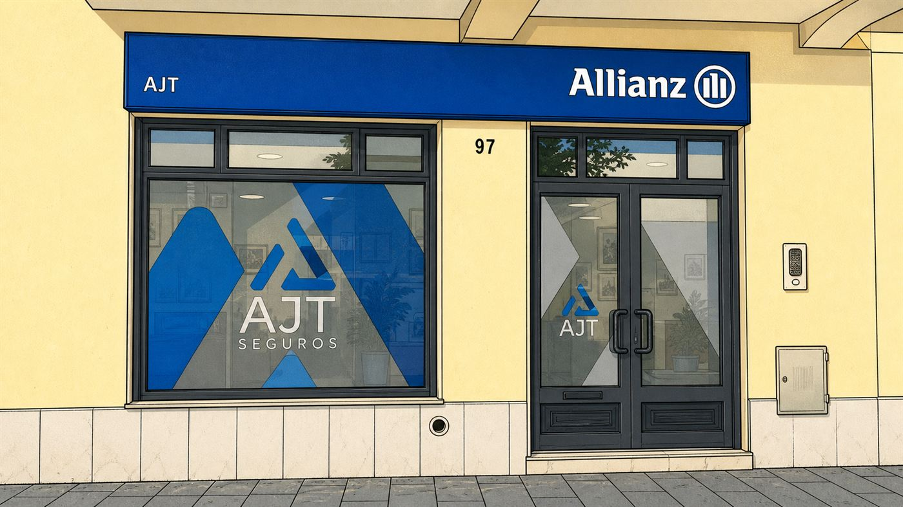

Dizemos quando não compensa
Se a apólice que já tem é melhor do que a que lhe podemos propor, dizemos isso e ficamos por ali. Perde-se uma venda, ganha-se um cliente.



Alcochete · desde 2002
Dizemos-lhe o que está — e o que não está — coberto antes de assinar, e tratamos do processo no dia em que precisa mesmo de accionar o seguro.
Resposta em 24 horas úteis · Sem compromisso · Sem insistências
Particulares
Seis áreas que cobrem o essencial de uma vida: o que conduz, onde mora, a saúde, e quem fica se faltar.
Da responsabilidade civil obrigatória às opções com danos próprios, conforme o plano, as franquias e as coberturas contratadas.
Ver seguro automóvelO obrigatório é igual ao do carro. O que muda é tudo o resto: protecção do condutor, capacete e equipamento pesam aqui muito mais.
Ver seguro de motocicloCoberturas para o edifício e/ou recheio, com opções adicionais — incluindo fenómenos sísmicos — conforme a solução contratada e as exigências do crédito.
Ver seguro de habitaçãoPode incluir consultas, exames, internamento e acesso dentário, conforme a opção, os capitais, a rede e os copagamentos contratados. Explicamos carências e exclusões antes de subscrever.
Ver seguro de saúdePode escolher uma solução de vida fora do banco, desde que cumpra as coberturas exigidas. Confirmamos consigo o eventual impacto no spread e comparamos o custo total.
Ver seguro de vidaProteção para acidentes da vida privada, do desporto ou dos tempos livres, conforme a opção, as atividades abrangidas e as condições contratadas.
Ver acidentes pessoaisEmpresas
Do café à oficina, da obra ao escritório. Começamos por verificar o que a lei exige para a sua actividade.
Obrigatório por lei para trabalhadores por conta de outrem e também para independentes. É o primeiro a tratar, sem excepção.
Ver acidentes de trabalhoResponde pelos danos que a actividade causa a terceiros. Obrigatório em vários sectores, indispensável em quase todos.
Ver responsabilidade civilProteção para instalações, equipamento e existências. As perdas de exploração podem exigir uma solução própria ou complementar.
Ver multirriscos empresarialUma renovação, um interlocutor e condições negociadas em conjunto. A apólice de frota aplica-se acima de dez veículos; abaixo disso, Auto Empresas.
Ver seguro de frotasCondições de grupo negociadas caso a caso, com enquadramento fiscal próprio a confirmar com o contabilista.
Ver Saúde EmpresasPorquê a AJT
Quando compra um seguro directamente à companhia, fica com uma apólice. Quando o compra através de um mediador, fica também com alguém que lê as condições por si — e que trata do processo quando alguma coisa corre mal.
Se a apólice que já tem é melhor do que a que lhe podemos propor, dizemos isso e ficamos por ali. Perde-se uma venda, ganha-se um cliente.
Franquias, capitais, carências e exclusões. Preferimos gastar meia hora a explicar do que ter de dar uma má notícia no dia do sinistro.
Participação, peritagem, reparação, pagamento. Fazemos a ponte com a companhia para que não tenha de andar de telefone na mão em linhas de apoio.
A companhia que representamos
Representamos a Generali Tranquilidade. Conhecer bem uma gama vale mais, no dia do sinistro, do que conhecer mal várias.
A AJT é mediadora registada na Autoridade de Supervisão de Seguros e Fundos de Pensões. A subscrição de qualquer contrato depende da aceitação pela companhia seguradora.
Como trabalhamos
O mesmo percurso, quer venha renovar o seguro do carro, quer venha segurar uma empresa com quinze trabalhadores.
O que tem, o que quer proteger e quanto está disposto a suportar em caso de sinistro. Sem formulário nem guião.
Simulamos as opções da companhia e ajustamos capitais, franquias e coberturas ao seu caso, para ver onde estão as diferenças que contam.
Apresentamos as opções em português corrente, com os prós e os contras de cada uma. A decisão é sempre sua.
Renovações, alterações de morada ou de veículo, participação de sinistros. É connosco que fala, não com um call center.
Quando corre mal
Preparámos um guia curto com o que fazer nas primeiras horas, os prazos que tem de cumprir e a informação que a companhia lhe vai pedir. Se preferir, ligue-nos e tratamos disto consigo ao telefone.
Em regra, um sinistro deve ser participado à seguradora nos oito dias seguintes — e, nos acidentes de trabalho, nas 24 horas seguintes. Ligue-nos assim que puder, mesmo que ainda não tenha todos os documentos reunidos.
Dois balcões, uma casa
Dois espaços na vila, à distância de cinco minutos um do outro. A mesma equipa, os mesmos processos — e, em qualquer um deles, o mesmo interlocutor do princípio ao fim.
 Generali Tranquilidade
Generali Tranquilidade
Alameda do Grupo Desportivo Alcochetense, 97
Atendimento a particulares e empresas, com estacionamento fácil à porta.
212 348 047 Generali Tranquilidade
Generali Tranquilidade
Rua Carlos Manuel Rodrigues Francisco, 229
Atendimento a particulares e empresas, no centro da vila.
210 889 917Não precisa de saber de antemão qual é o balcão certo — tratam dos mesmos assuntos. Quem o atender trata do caso ou encaminha-o internamente, e é a mesma pessoa que o acompanha até ao fim. Os seguros de empresa são tratados nos dois espaços.
Diga-nos o que tem hoje e o que o preocupa. Em 24 horas úteis dizemos-lhe se compensa mudar alguma coisa — e se não compensar, dizemos isso também.
Sem compromisso. Não usamos os seus dados para mais nada.